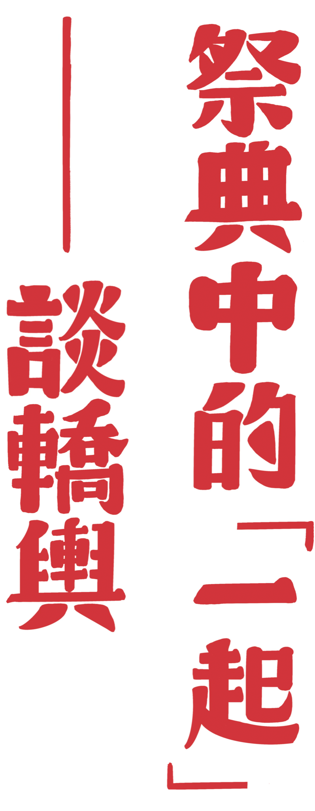

不難發現，在節祭之中我們常用到「轎子」，或者說，我們一起扛著什麼。
在這裡我們先把「什麼」放一旁，首先說說我們「一起扛著」這件事情。一起扛著（無論是什麼）本身就自帶著意義。更詳細一點來說，轎子要扛起，必定需要兩個人，所以轎子意味著合力，另外「扛」轎子也意味著比人還要高這件事情。所以當你看見一群人扛著什麼，你不會覺得那個「什麼」是個微不足道的小東西，你會認為轎子扛的必然是一個價值高於轎手的東西。
在癸卯上元第一天即將結束之時，出乎我們意料的，有許多隻手一同扛起了轎子，也有許多人開始鑽起了轎子，無論是扛還是鑽，在那樣的情境裡，轎子是人們合力撐起的、是在人們之上的。我們似乎找到了一個集體認同的核心，一個高於我們的東西，轎子裡所乘載的並不是天地之神，不過在那個時候具有了一個比人們更高的位階，是擺放在集體之中才能夠展現出來的。
這即是轎子的形式。在節祭中的物品皆有它的形式，這些形式成為了我們為何要用的理由之一。當然，形式雖然被首先討論，不過我們不能忽略轎子所擁有的脈絡，包含歷史、民間傳統、工藝等等，因為我們仍然在創造藝術，我們仍舊有話想說，於是接下來還得討論：我們想要什麼樣的內容？


這可以說是最關鍵的問題。我們所想要創造出的東西，應該是跟當代人有意義的，應該是更能夠引起迴響的，所以我們為什麼要在當代繼續「創造轎子」？必定有理由與意義。轎子的內容不沿襲傳統，並非裝載權貴，也並非裝載神祇。我們要找到一種可以與「我們」相關，同時有具有「超越性的」存在。狂妄一點的說，我們要的即是：在一片文化的廢墟之上建立能與當代對話的精神主體。
在這一路上，我們持續地在摸索什麼才是值得延續做下去的，在第一年上元，沒有做出轎子，大抵是因為沒有能力可以找到置於高位的東西。第二年上元，做出了火轎，因為火的自然面向彷彿有某種世界性，這正好符合了第二年對於「世界」的想像。而第三年，也就是主要要介紹的這一年，我們做出了花轎，一頂以剪紙為主要風格的轎子，代表著某種文化性。第三年與第二年的路線相當不同，比起「普遍」，我們選擇的是「差異」，比起「世界」，我們更關注的是「社會」。
癸卯上元出現的花轎，有種解釋是代表了人們對於家的想像。以前的人會在屋頂、門窗、爐灶甚至是碗筷上面貼上剪紙，這些脆弱卻花費力氣的裝飾，代表著人年年除舊布新的想像，也代表了人們長期居住的預想。轎子可說是一個家，也可以說是故鄉，人們對於故鄉總是有許多的盼望，希望這裡能夠繁榮、能夠美麗……我們扛起的，不是神的居所，是眾人匯聚而成的願望。
節祭即將邁入第四年，轎子，可說是之後發展的核心，是整場祭典中最重要的精神象徵。轎子，比起與天連結，更多的是人們與彼此的連結。看見人們一起走在街上扛著轎，可說是我們孤單的城市裡所願望的、所渴望的，更是能夠讓我們所感動的一景，因為那代表了我們共同的信念。